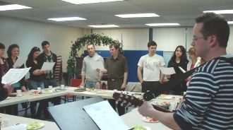
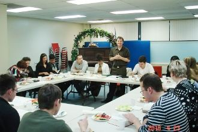
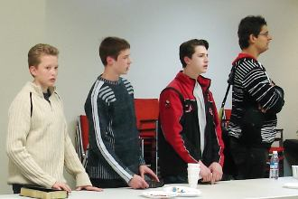

| Молодёжное |
| Разговоры о совместном собрании молодёжной группы шли
почти два месяца. Наконец 16 апреля 2010 состоялось первое собрание в помещении NYT. Основу молодёжной группы составляют члены церкви на Carr Street. По первому собранию трудно судить об успехе этого движения, тем более что ранее они собирались по частным домам и привыкли к домашнему окружению. Второе собрание состоялось 23 апреля.. Тема собрания была: "Как христианин может быть свидетелем перед неверующим или сомневающимся". Ключевой текст из Библии: |
|
Марка 8: 31 И начал учить их, что Сыну Человеческому много должно пострадать, быть отвержену старейшинами, первосвященниками и книжниками, и быть убиту, и в третий день воскреснуть. 32 И говорил о сем открыто. Но Петр, отозвав Его, начал прекословить Ему. 33 Он же, обратившись и взглянув на учеников Своих, воспретил Петру, сказав: отойди от Меня, сатана, потому что ты думаешь не о том, что Божие, но что человеческое. 34 И, подозвав народ с учениками Своими, сказал им: кто хочет идти за Мною, отвергнись себя, и возьми крест свой, и следуй за Мною. 35 Ибо кто хочет душу свою сберечь, тот потеряет ее, а кто потеряет душу свою ради Меня и Евангелия, тот сбережет ее. 36 Ибо какая польза человеку, если он приобретет весь мир, а душе своей повредит? 37 Или какой выкуп даст человек за душу свою? 38 Ибо кто постыдится Меня и Моих слов в роде сем прелюбодейном и грешном, того постыдится и Сын Человеческий, когда приидет в славе Отца Своего со святыми Ангелами. |
|  |  |
|
Ведущий собрание, брат Андрей, обратился к присутствущим с вопросом: стыдится ли кто
признаваться в том, что он верующий или предпочитает скрывать это?
Из ответов был сделан вывод: в основном проблемы возникают у верующих с небольшим стажем и при следующих обстоятельствах: 1. Когда на работе сквернословят или обсуждают "скользкие" темы; 2. Все идут в бар, а мне надо в церковь; 3. Обсуждают начальство или отсутствующего товарища; 4. Скрывают брак в работе: авось не заметят; 5. Пользуются шпаргалками или просят подсказки на экзамене. |
|  | Замечено, что в Канаде на слова "я
христианин", в основном говорят "ОК! - это твоё дело". Аргументы из Слова Божьего можно приводить только тогда, когда это тебя защищает. Страшно быть отверженным в своей компании друзей, на работе или на учёбе. |